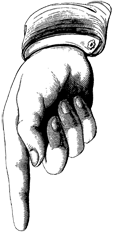

CUANDO EMPEZAMOS?
QUE HAREMOS?
A rodar con La Pilar
Hace un tiempo nos compramos una furgoneta, la llamamos Doña Pilar. Conseguimos la furgo para viajar, no para ir del punto A al punto B, descubrir territorios nuevos, perdernos…
Este verano, el primero con furgoneta, en vez de viajar, echamos raices en un pueblo de la Ribera del Ebro para dedicarnos con tranquilidad a aprender nuevos trucos y pulir nuestras habilidades. Para ello contamos con amigos que han venido a vernos a Miravet a enseñarnos cosas y a dar su punto de vista cuando analizamos cómo hacemos lo que hacemos, porqué y en qué formato.
Pero en octubre nos vamos a desquitar. Vamos a peregrinar por toda la Península devolviendo las visitas a nuestros amigos. Haremos este viaje para poner en práctica lo aprendido, para enseñar lo que hacemos. Ofrecemos nuestros cursos y actividades a cualquier tipo de empresa. Familiar o multinacional, grande o pequeña, del sector hortofrutícola o una guardería. No importa. Queremos que cualquier empresa, asociación o colectivo consiga de nosotros un pedazo de lo aprendido.
Para esto tenemos un catálogo con precios apropiados para que se lo puedan permitir sin tener claro su valor o si de verdad lo necesitan. Estos precios harán posible que podamos dar también este mismo valor a colectivos, asociaciones, empresas o personas que no se lo puedan permitir. Esta actividad sólo tiene que permitirnos seguir viajando.
FORMACION
Nos encanta transmitir todo lo que sabemos hacer. Tanto en los años que llevamos trabajando como durante este verano, hemos aprendido un montón de técnicas, herramientas y metodologías.
Desde enseñar a pequeños negocios cómo usar la tecnología para ser más eficientes o introducirlos a Agile, Scrum o Kanban; hasta refactoring, design patterns y otras maravillas del XP. Pasando por el mítico taller de historias de usuario, aprender backlog grooming, story mapping, Javascript…
SERVICIOS
Si lo que te interesa es optimizar y consolidar la forma de trabajar de tu empresa o de tus equipos, te podemos ayudar implantando o mejorando Scrum y Kanban o implementando herramientas para hacer que el trabajo asíncrono y en remoto sea el pan de cada día.
Para quienes estéis diseñando un nuevo producto o decidiendo los siguientes pasos en vuestro periplo, quizá os venga bien una incepción o enfocar vuestros objetivos con impact mapping.
Y a los más técnicos os podemos hacer code review o test boost para integrar TDD y mejorar el rendimiento de vuestros proyectos, productos y proyuctos.
LO QUE NOS MUEVE
No podemos dejar a nadie fuera de esta movida. No sería justo no ayudar a alguien simplemente por una cuestión de Euros.
¿Qué más da usar el dinero u otras cosas como casa, cama, comida, cervezas o aprendizaje como forma de intercambio?
Con una barrera tan baja, la decisión de compartir esta aventura con nosotros es vuestra.
Nuestro lado más social se sustenta con otras actividades de pago que haremos durante nuestro tour. Si eres alguien que nos ha contratado debes saber que también haces posible esta causa.
Si hay alguien a quien le vendría muy bien nuestra ayuda y sabrá valorarla pero está a dos velas, háznoslo saber y le haremos una visita.
LA TRIPULACION
En la furgoneta saldremos Xavi, Aitor y Luis. Pero esperamos que se suban muchos otros para recorrer una etapa o llevarnos a algun sitio.
Si quieres subirte sólo tienes que decirlo. También queremos que participes de muchas otras maneras. Ahora es el momento de apalizar a tu jefe con un curso de Kanban, de buscarnos empresas que necesiten nuestro servicios. Ayúdanos a encontrar personas o colectivos que puedan aprovecharse, pídenos que convoquemos un curso en tu ciudad o una charla en tu asociación favorita.
Consulta nuestro catalogo…
… y escríbenos!
Podéis proponernos cualquier plan que se os ocurra. Desde talleres o cursos en vuestras ciudades, hasta acompañarnos en alguna etapa…
LA RUTA
ESTATE AL LORO
Si quieres saber mas sobre nosotros, no dejes de seguirnos!

Queremos enseñar Scrum a cambio de huevos y leche o montar una web a cambio de algunas comidas.
Este experimento está abierto a todo el que quiera aprender con nosotros. Lo haremos lo más público posible e iremos informando durante su preparación y durante el viaje.
★ ★ ★ ★ ★